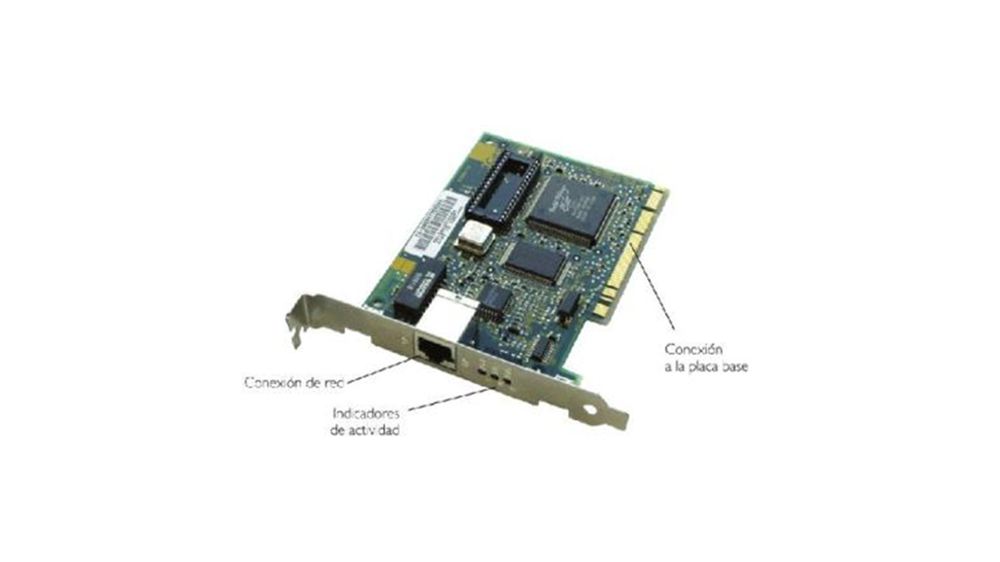
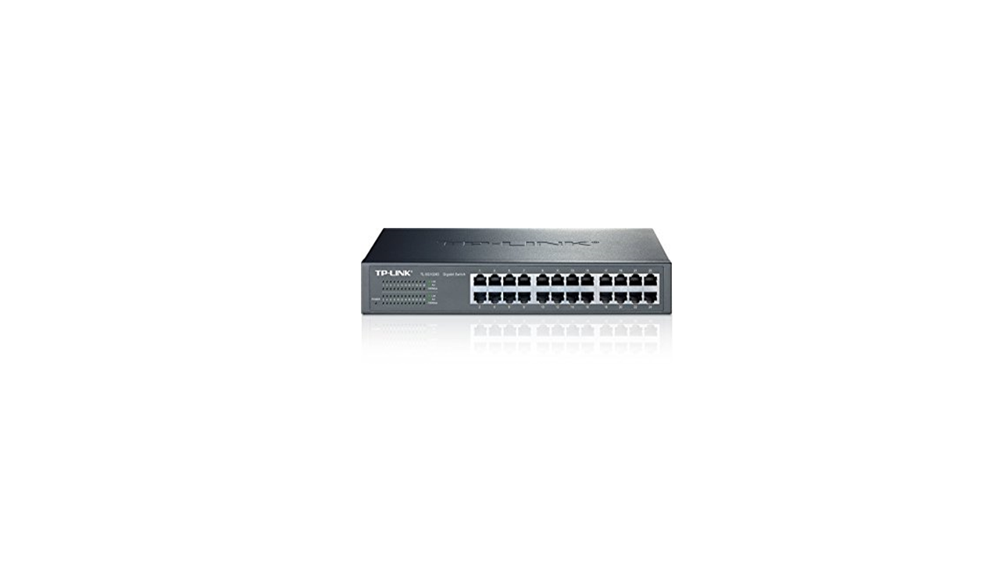
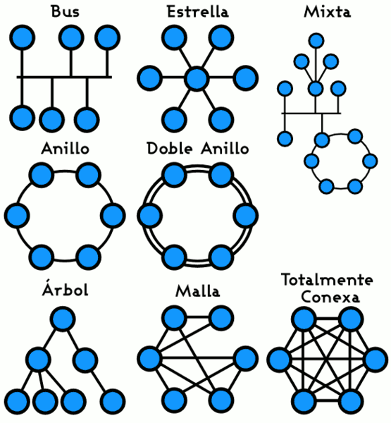

Redes.
Que es una red en Informatica.
Una red informática es un conjunto de dispositivos interconectados entre sí a través de un medio, que intercambian información y comparten recursos. Básicamente, la comunicación dentro de una red informática es un proceso en el que existen dos roles bien definidos para los dispositivos conectados, emisor y receptor, que se van asumiendo y alternando en distintos instantes de tiempo.
COMPONENTES FÍSICOS DE UNA RED
Una red de computadoras está conectada tanto por hardware como por software. El hardware incluye tanto las tarjetas de interfaz de red como los cables que las unen, y el software incluye los controladores (programas que se utilizan para gestionar los dispositivos y el sistema operativo de red que gestiona la red. En esta ocasión trataremos los componentes físicos o hardware de red.
TARJETA NIC O DE RED.
(Network Interface Card), Tarjeta de Interfaz de Red en español), es un dispositivo electrónico que permite a una DTE (Data Terminal Equipment) ordenador o impresora acceder a una red y compartir recursos entre dos o más equipos (discos duros, cdrom, etc.). Hay diversos tipos de adaptadores en función del tipo de cableado o arquitectura que se utilice en la red (coaxial fino, coaxial grueso, etc.), pero, actualmente el más común es del tipo Ethernet utilizando un interfaz o conector RJ45.

EL SWITCH
El funcionamiento de una red consiste en conectar los ordenadores y periféricos utilizando dos tipos de equipos: routers y switches.
Los routers y switches permiten a los dispositivos que están conectados a la red comunicarse unos con otros, así como con otras redes. Aunque son muy parecidos, los switches y routers realizan funciones muy diferentes en la red:
Los switches se utilizan para conectar múltiples dispositivos de la misma red dentro de un edificio o campus. Por ejemplo, un switch puede conectar sus ordenadores, impresoras y servidores, creando una red de recursos compartidos. El switch actuará como un controlador, permitiendo a los diferentes dispositivos compartir información y comunicarse entre sí, Mediante el uso compartido de información y la asignación de recursos, los switches permiten ahorrar dinero y aumentar la productividad.

Existen dos tipos básicos de switches: gestionados y no gestionados.
Los switches no gestionados funcionan de forma automática y no permiten realizar cambios. Los equipos de redes domésticas suelen utilizar switches no gestionados.
Los switches gestionados le permiten acceder a ellos para programarlos. Esto proporciona una gran flexibilidad porque el switch puede monitorizarse y ajustarse local o remotamente, para proporcionarle el control de cómo se transmite el tráfico en su red y quién tiene acceso a su red.
Topologia de redes.
Una topología de red es la disposición de una red, incluyendo sus nodos y líneas de conexión. Hay dos formas de definir la geometría de la red: la topología física y la topología lógica (o de señal).
La topología física de una red es la disposición geométrica real de las estaciones de trabajo. Existen varias topologías físicas comunes, como se describe a continuación y como se muestra en la ilustración.
La topología lógica (o de señal) se refiere a la naturaleza de los caminos que siguen las señales de nodo a nodo. En muchos casos, la topología lógica es la misma que la topología física. Pero no siempre es así. Por ejemplo, algunas redes se disponen físicamente en una configuración en estrella, pero funcionan lógicamente como redes de bus o de anillo.
